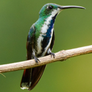
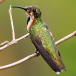
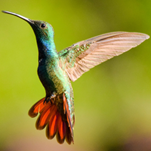

Mango de Veragua
Anthracothorax veraguensis
Orden: Apodiformes
Familia: Trochilidae
Colibrí bastante grande con pico ligeramente curvado, extremadamente similar a Green-breasted Mango, y su traslape de rangos no es perfectamente entendido. Al parecer, Veraguan Mango principalmente reemplaza a Green-breasted desde la Península de Osa hasta la ciudad de Panamá.



